This guide covers all of Midnight Enchanting. You'll find every weekly and one-time Knowledge source, profession equipment, renown-gated recipes, and full recipe lists for weapon, armor, ring, helm, shoulder, and tool enchants, plus oils, wands, and house decor.
Enchanting in Midnight works similarly to The War Within, but there are some new enchant slots (helm, shoulders) and the quality system got simplified. The recipes are split between trainers, vendors in different zones, and dungeon drops.
If you need help leveling Enchanting from 1 to 100, check out my leveling guide:
Midnight Enchanting Leveling Guide
Midnight Enchanting Changes
These are the notable Enchanting changes in the Midnight expansion. If you played an Enchanter in The War Within, you'll adapt quickly since most systems work the same way.
- Artisan Enchanter's Moxie - The BoP currency
 Artisan's Acuity from The War Within has been changed to a profession-specific currency,
Artisan's Acuity from The War Within has been changed to a profession-specific currency,  Artisan Enchanter's Moxie. You can now only use it for Enchanting recipes, not other professions.
Artisan Enchanter's Moxie. You can now only use it for Enchanting recipes, not other professions. - No More Bronze Quality - Bronze-quality enchants and reagents no longer exist. All consumables and reagents now only have two quality levels: Silver and Gold. You'll always get at least Silver quality, and Concentration guarantees Gold.
- New Enchant Slots - Midnight introduces new enchant slots for Helm and Shoulder armor in addition to the existing ones.
- Cloak & Bracer Enchants Removed - There are no Cloak or Bracer enchants in Midnight. These slots have been dropped entirely.
- Epic Profession Accessories - The War Within already had an Epic enchanting rod, but Midnight adds Epic-quality accessories too. They give the same Skill as Rare, but have higher secondary stats.
- Shattering Available From Day 1 - In The War Within, shattering recipes (Dawn Shatter, Radiant Shatter) were locked behind later patches, which made Enchanting dust extremely expensive at launch. In Midnight, shattering is available right away, so dust prices should be much more reasonable from the start.
Weekly Enchanting Knowledge in Midnight
In Midnight, there are five weekly sources of Enchanting Knowledge. Enchanters don't have the Crafting Orders quest that other professions get. Instead, you earn extra Knowledge from Disenchanting drops.
| Source | Details |
|---|---|
| Weekly Quest (3 KP) | Your Enchanting trainer will offer a weekly quest that rewards a |
| Weekly Drops (4 KP) | Each week, you can loot 1 of each of the following items from treasures scattered around the new zones: 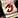 Lost Thalassian Vellum and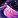 Voidstorm Ashes. |
| Disenchanting Drops (~9 KP) | Instead of the Crafting Orders weekly quest, Enchanters earn knowledge by disenchanting gear. This works similarly to how gathering professions get extra knowledge from gathering. You can loot 5x 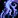 Swirling Arcane Essence and 1x Brimming Mana Shard. |
| Inscription Treatise (1 KP) | To get a |
| Darkmoon Faire (3 KP / month) | Once a month, the Darkmoon Faire comes to town and you can complete a quick profession quest for +3 Knowledge Points and +2 Profession Skill. It's not a weekly source, but don't skip it. The Faire starts on the Sunday before the first Monday of each month. |
Enchanting Knowledge Catch-Up
Enchanters can earn extra Knowledge Points by Disenchanting. After getting all your Weekly Knowledge Points, you'll start looting Glimmering Powder, which gives +1 Knowledge per drop. The amount you get depends on how many points you're behind.
To make Glimmering Powder start dropping, you must first complete your weekly Enchanting tasks:
- Trainer weekly quest
- Disenchant items until you get the 5x Swirling Arcane Essence and 1x Brimming Mana Shard weekly Knowledge Points
- Loot the 2 weekly items from treasures: Lost Thalassian Vellum and Voidstorm Ashes
Once those are done, Glimmering Powder will begin to drop from disenchanting eligible items. Just like gathering professions, these do not have a weekly cap, you can earn them until you're caught up.
Glimmering Powder Drop Rates
I only tested a few hundred disenchanting attempts, but the results should be close enough to give you a good idea of the drop rates:
- Greens: ~10%
- Blues: ~50%
- Epics: Always drop 1 (100%)
One-Time Enchanting Knowledge in Midnight
These are one-time sources of Enchanting Knowledge in Midnight. Treasures are the fastest way to get Knowledge Points for your specializations, so collect them as soon as possible. Each treasure is a one-time pickup per character.
Renown Knowledge Book
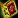
Midnight Enchanting Treasures
There are 8 Enchanting treasures in Midnight. Collecting them provides 24 Knowledge Points in total. They are located in Eversong Woods, Zul'Aman, Harandar, and Voidstorm.
| Treasure | Zone | Map |
|---|---|---|
| Sin'dorei Enchanting Rod | Eversong Woods | |
| Everblazing Sunmote | Eversong Woods | |
| Loa-Blessed Dust | Zul'Aman | |
| Enchanted Amani Mask | Zul'Aman, Atal'Aman | |
| Primal Essence Orb | Harandar | |
| Entropic Shard | Harandar | |
| Pure Void Crystal | Voidstorm | |
| Enchanted Sunfire Silk | Location not found yet | - |
TomTom Waypoints & Treasure Check Macro
TomTom Waypoints
/ttpaste in-game/way #2395 63.5, 32.6 Sin'dorei Enchanting Rod /way #2395 60.8, 53.0 Everblazing Sunmote /way #2437 40.4, 51.1 Loa-Blessed Dust /way #2536 48.4, 22.9 Enchanted Amani Mask /way #2413 65.8, 50.2 Primal Essence Orb /way #2413 37.7, 65.3 Entropic Shard /way #2405 35.5, 58.8 Pure Void Crystal
Treasure Check Macro
true = collectedEnchanting Specializations
There are four specialization trees available. You unlock them at Enchanting skill levels 25, 50, 60, and 75.
- Elevating Equipment - All the enchants organized by faction style (Thalassian, Amani, Haranir), including profession tool enchants.
- Transitories, Tonics, and Tools - Mana Oils, Combat Wands, the Enchanting Rod, and Temporary Illusions.
- Disenchanting Delegate - Better materials when you disenchant gear.
- Spellbound Shatterer - Crafting stats.
I have a separate guide that walks through the best builds for each playstyle with step-by-step Knowledge Point allocation.
Midnight Enchanting Specialization Guide & Best Builds
Profession Equipment
Enchanters were unique in The War Within because they were the only profession with Epic tools (the Enchanted Runed Warpstone Rod). In Midnight, every profession now has access to Epic tools, so Enchanting is no longer special in this regard.
The key thing to remember: Epic and Rare tools give the same Skill bonus (+18 for tools, +11 for accessories = +40 total). Epic tools only provide higher secondary stats (Resourcefulness, Ingenuity, Multicraft). Rare tools work fine for crafting max-rank items.
Profession Gear for Enchanters
Enchanters can craft their own Runed Rod (main tool). You'll need to get a Hat from a Tailor and a Focusing Crystal from a Jewelcrafter.
| Slot | Crafted By | Green Quality | Blue Quality | Epic Quality |
|---|---|---|---|---|
| Tool (Rod) | Enchanting | |||
| Accessory (Hat) | Tailoring | |||
| Accessory (Crystal) | Jewelcrafting | 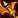 Silvermoon Focusing Shard |
Sin'dorei Enchanter's Crystal | Attuned Thalassian Rune-Prism |
Rod Recipes
Enchanters can craft their own profession tool. The recipes come from:
- Green (Runed Refulgent Copper Rod): Trainer at skill 1
- Blue (Runed Brilliant Silver Rod): Specialization: Transitories, Tonics, and Tools
- Epic (Runed Dazzling Thorium Rod): Vendor: Lyna in Silvermoon City
Renown Recipes
Each faction sells 2-4 recipes at Renown Rank 5, including weapon enchants, tool enchants, and some unique items like the Codex off-hands and Gleeful Glamour.
| Recipe | Effect | Faction | Vendor |
|---|---|---|---|
| Enchant Tool - Amani Perception | +Perception | Amani Tribe (Rank 5) | Magovu |
| Enchant Weapon - Strength of Halazzi | Proc: Bleed damage | Amani Tribe (Rank 5) | Magovu |
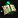 Endless Codex of Nature's Grace |
House Decor | Amani Tribe (Rank 5) | Magovu |
| Enchant Chest - Mark of the Rootwarden | +Agility, +Speed | Hara'ti (Rank 5) | Naynar |
| Enchant Tool - Haranir Multicrafting | +Multicrafting | Hara'ti (Rank 5) | Naynar |
| Enchant Weapon - Worldsoul Tenacity | Vers + absorb (tank) | Hara'ti (Rank 5) | Naynar |
| Gleeful Glamour - Haranir | Cosmetic toy | Hara'ti (Rank 5) | Naynar |
| Enchant Ring - Silvermoon's Tenacity | +Vers (higher) | Silvermoon Court (Rank 5) | Caeris Fairdawn |
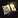 Endless Codex of Blooming Light |
House Decor | Silvermoon Court (Rank 5) | Caeris Fairdawn |
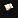 Spellbound Tome of Thalassian Magics |
House Decor | Silvermoon Court (Rank 5) | Caeris Fairdawn |
| Enchant Tool - Ren'dorei Ingenuity | +Ingenuity | The Singularity (Rank 5) | Void Researcher Anomander |
| Enchant Weapon - Acuity of the Ren'dorei | Proc: Primary Stat buff | The Singularity (Rank 5) | Void Researcher Anomander |
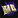 Endless Codex of the Voidtouched |
House Decor | The Singularity (Rank 5) | Void Researcher Anomander |
Enchants
Here is the complete list of new Enchanting recipes in Midnight. Recipes come from trainers, specialization unlocks, vendors (different factions sell different recipes), treasure drops, and dungeon drops.
Enchant Categories
Enchants in Midnight are organized into themed categories that correspond to specialization skill bonuses:
- Amani Augments
- Haranir Heightening
- Thalassian Talents
Pay attention to which category an enchant belongs to when planning your specializations. Each category has its own skill bonus node in the specialization tree, so investing in the right branch directly increases the quality of the enchants you craft in that category.
Weapon Enchants
Most of these are stat procs for DPS. The Worldsoul enchants are defensive options for tanks and healers.
| Recipe | Effect | Type | Source |
|---|---|---|---|
| Enchant Weapon - Berserker's Rage | Proc: Haste buff | Amani | Trainer (20) |
| Enchant Weapon - Jan'alai's Precision | Proc: Crit buff | Amani | Trainer (55) |
| Enchant Weapon - Arcane Mastery | Proc: Mastery buff | Thalassian | Trainer (40) |
| Enchant Weapon - Acuity of the Ren'dorei | Proc: Primary Stat buff | Thalassian | Vendor: Void Researcher Anomander (Voidstorm) |
| Enchant Weapon - Strength of Halazzi | Proc: Bleed damage | Amani | Vendor: Magovu (Zul'Aman) |
| Enchant Weapon - Flames of the Sin'dorei | Ignite + AoE on kill | Thalassian | Drop: Degentrius (Magisters' Terrace) |
| Enchant Weapon - Worldsoul Aegis | Shield on damage taken (tank) | Haranir | Trainer (55) |
| Enchant Weapon - Worldsoul Tenacity | Vers + absorb (tank) | Haranir | Vendor: Naynar (Harandar) |
| Enchant Weapon - Worldsoul Cradle | Heal absorb shield (healer) | Haranir | Drop: Chimaerus (The Dreamrift) |
Boot Enchants
All boot enchants give a tertiary stat plus some Stamina.
| Recipe | Effect | Type | Source |
|---|---|---|---|
| Enchant Boots - Lynx's Dexterity | +Avoidance, +Stamina | Amani | Spec: Elevating Equipment |
| Enchant Boots - Shaladrassil's Roots | +Leech, +Stamina | Haranir | Drop: Heavy Trunk (Delves) |
| Enchant Boots - Farstrider's Hunt | +Speed, +Stamina | Thalassian | Vendor: Construct V'anore (Silvermoon City) |
Chest Enchants
Pick the one that matches your primary stat. Mark of the Worldsoul works for everyone and gives the most raw stats.
| Recipe | Effect | Type | Source |
|---|---|---|---|
| Enchant Chest - Mark of the Rootwarden | +Agility, +Speed | Haranir | Vendor: Naynar (Harandar) |
| Enchant Chest - Mark of the Magister | +Intellect, +Mana% | Thalassian | Drop: Degentrius (Magisters' Terrace) |
| Enchant Chest - Mark of Nalorakk | +Strength, +Stamina | Amani | Treasure: Den of Nalorakk |
| Enchant Chest - Mark of the Worldsoul | +Primary Stat | Haranir | Spec: Elevating Equipment |
Helm Enchants
Tertiary stats again. The Empowered versions give more stats and a bonus proc when you kill outdoor mobs, so they're better for world content.
| Recipe | Effect | Type | Source |
|---|---|---|---|
| Enchant Helm - Rune of Avoidance | +Avoidance | Thalassian | Trainer (15) |
| Enchant Helm - Empowered Rune of Avoidance | +Avoidance, +Speed burst on kill | Thalassian | Drop: Heavy Trunk (Delves) |
| Enchant Helm - Hex of Leeching | +Leech | Amani | Trainer (35) |
| Enchant Helm - Empowered Hex of Leeching | +Leech, +Heal on kill | Amani | Drop: Heavy Trunk (Delves) |
| Enchant Helm - Blessing of Speed | +Speed | Haranir | Trainer (50) |
| Enchant Helm - Empowered Blessing of Speed | +Speed, +Vigor on kill | Haranir | Spec: Elevating Equipment |
Shoulder Enchants
More tertiary stats. Same deal as boots and helm. Each type has a base and a higher version.
| Recipe | Effect | Type | Source |
|---|---|---|---|
| Enchant Shoulders - Nature's Grace | +Avoidance | Haranir | Trainer (10) |
| Enchant Shoulders - Amirdrassil's Grace | +Avoidance (higher) | Haranir | Drop: Heavy Trunk (Delves) |
| Enchant Shoulders - Thalassian Recovery | +Leech | Thalassian | Trainer (50) |
| Enchant Shoulders - Silvermoon's Mending | +Leech (higher) | Thalassian | Spec: Elevating Equipment |
| Enchant Shoulders - Flight of the Eagle | +Speed | Amani | Trainer (30) |
| Enchant Shoulders - Akil'zon's Swiftness | +Speed (higher) | Amani | Drop: Heavy Trunk (Delves) |
Ring Enchants
Secondary stats. You have two ring slots, so you can double up on one stat or mix. The spec/drop versions give more stats than trainer ones.
| Recipe | Effect | Type | Source |
|---|---|---|---|
| Enchant Ring - Nature's Wrath | +Crit | Haranir | Trainer (25) |
| Enchant Ring - Nature's Fury | +Crit (higher) | Haranir | Drop: Heavy Trunk (Delves) |
| Enchant Ring - Eyes of the Eagle | +Crit Effectiveness% | Amani | Drop: Zul'Aman Treasures |
| Enchant Ring - Thalassian Haste | +Haste | Thalassian | Trainer (1) |
| Enchant Ring - Silvermoon's Alacrity | +Haste (higher) | Thalassian | Spec: Elevating Equipment |
| Enchant Ring - Amani Mastery | +Mastery | Amani | Trainer (45) |
| Enchant Ring - Zul'jin's Mastery | +Mastery (higher) | Amani | Spec: Elevating Equipment |
| Enchant Ring - Thalassian Versatility | +Vers | Thalassian | Trainer (5) |
| Enchant Ring - Silvermoon's Tenacity | +Vers (higher) | Thalassian | Vendor: Caeris Fairdawn (Eversong Woods) |
Tool Enchants
These go on your profession tools. Resourcefulness saves materials, Multicraft gives bonus procs, Perception helps find rare reagents.
| Recipe | Effect | Type | Source |
|---|---|---|---|
| Enchant Tool - Amani Perception | +Perception | Amani | Vendor: Magovu (Zul'Aman) |
| Enchant Tool - Amani Resourcefulness | +Resourcefulness | Amani | Spec: Elevating Equipment |
| Enchant Tool - Haranir Finesse | +Finesse | Haranir | Spec: Elevating Equipment |
| Enchant Tool - Haranir Multicrafting | +Multicrafting | Haranir | Vendor: Naynar (Harandar) |
| Enchant Tool - Ren'dorei Ingenuity | +Ingenuity | Thalassian | Vendor: Void Researcher Anomander (Voidstorm) |
| Enchant Tool - Sin'dorei Deftness | +Deftness | Thalassian | Spec: Elevating Equipment |
Oils, Rods & Cosmetics
Beyond gear enchants, Enchanting also gives you consumables, cosmetics, and housing decorations.
Consumables
Enchanting consumables are weapon oils that apply temporary buffs to weapons. These are 1-hour buffs that persist through death.
| Recipe | Effect | Source |
|---|---|---|
| Healer oil: chance to shield your target | Spec: Transitories, Tonics, and Tools | |
| DPS oil: chance to deal Arcane damage | Drop: Lithiel Cinderfury (Murder Row) | |
| Stat oil: +Crit and +Haste | Trainer (20) |
Rods
Enchanting rods are your profession tool. Higher tier rods provide better profession stats.
| Recipe | Quality | Source |
|---|---|---|
| Common - Starter rod | Trainer (1) | |
| Rare - Mid-tier profession stats | Spec: Transitories, Tonics, and Tools | |
| Epic - Best profession stats | Vendor: Lyna (Silvermoon City) |
Shattering
Shattering recipes convert higher-tier enchanting materials into multiple lower-tier ones. They are useful when you have excess of one type and need another.
| Recipe | Conversion | Source |
|---|---|---|
| Dawn Crystal → 3 Radiant Shards | Trainer (25) | |
| Radiant Shard → 3 Eversinging Dust | Trainer (50) | |
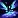 Shatter Essence |
Buff: +Resourcefulness, +Ingenuity, +Multicraft | Spec: Spellbound Shatterer |
Illusions
Illusions are cosmetic weapon enchant effects.
| Recipe | Visual Effect | Source |
|---|---|---|
| Illusory Adornment - Blooming Light | Golden/holy glow | Trainer (25) |
| Illusory Adornment - Nature's Embrace | Green nature effect | Vendor: Construct V'anore (Silvermoon City) |
| Illusory Adornment - Voidtouched | Purple void effect | Drop: Victorious Stormarion Pinnacle Cache |
Gleeful Glamours
Gleeful Glamours are cosmetic toys that transform you into various races. There are 25 Glamours total, one for every playable race. All except one are learned from the trainer:
- Gleeful Glamour - Haranir - Vendor: Naynar (Harandar)
All Trainer Glamours
| Recipe | Source |
|---|---|
| Gleeful Glamour - Blood Elf | Trainer (5) |
| Gleeful Glamour - Night Elf | Trainer (5) |
| Gleeful Glamour - Dwarf | Trainer (10) |
| Gleeful Glamour - Earthen | Trainer (10) |
| Gleeful Glamour - Undead | Trainer (10) |
| Gleeful Glamour - Human | Trainer (15) |
| Gleeful Glamour - Orc | Trainer (15) |
| Gleeful Glamour - Draenei | Trainer (20) |
| Gleeful Glamour - Tauren | Trainer (20) |
| Gleeful Glamour - Nightborne | Trainer (25) |
| Gleeful Glamour - Void Elf | Trainer (25) |
| Gleeful Glamour - Vulpera | Trainer (30) |
| Gleeful Glamour - Worgen | Trainer (30) |
| Gleeful Glamour - Kul Tiran | Trainer (35) |
| Gleeful Glamour - Zandalari Troll | Trainer (35) |
| Gleeful Glamour - Highmountain Tauren | Trainer (40) |
| Gleeful Glamour - Lightforged Draenei | Trainer (40) |
| Gleeful Glamour - Dark Iron Dwarf | Trainer (45) |
| Gleeful Glamour - Pandaren | Trainer (45) |
| Gleeful Glamour - Troll | Trainer (45) |
| Gleeful Glamour - Gnome | Trainer (50) |
| Gleeful Glamour - Goblin | Trainer (50) |
| Gleeful Glamour - Mag'har Orc | Trainer (55) |
| Gleeful Glamour - Mechagnome | Trainer (55) |
House Decor
These are housing decorations you can place in your home. Enchanting offers animated objects and magic-themed decor.
| Recipe | Source |
|---|---|
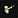 Animated Sin'dorei Hammer |
Vendor: World Vendors (Eversong Woods) |
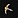 Animated Sin'dorei Pick |
Vendor: World Vendors (Eversong Woods) |
| Endless Codex of Blooming Light | Vendor: Caeris Fairdawn (Eversong Woods) |
| Endless Codex of Nature's Grace | Vendor: Magovu (Zul'Aman) |
| Endless Codex of the Voidtouched | Vendor: Void Researcher Anomander (Voidstorm) |
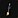 Ensorcelled Broom |
Trainer (80) |
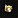 Font of Gleaming Water |
Trainer (80) |
| Ren'dorei Postage Repository | Drop: Voidstorm Treasures |
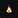 Rootflame Campfire |
Drop: Heavy Trunk (Delves) |
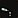 Self-Pouring Thalassian Sunwine |
Vendor: Neriv (Eversong Woods) |
| Spellbound Tome of Thalassian Magics | Vendor: Caeris Fairdawn (Eversong Woods) |